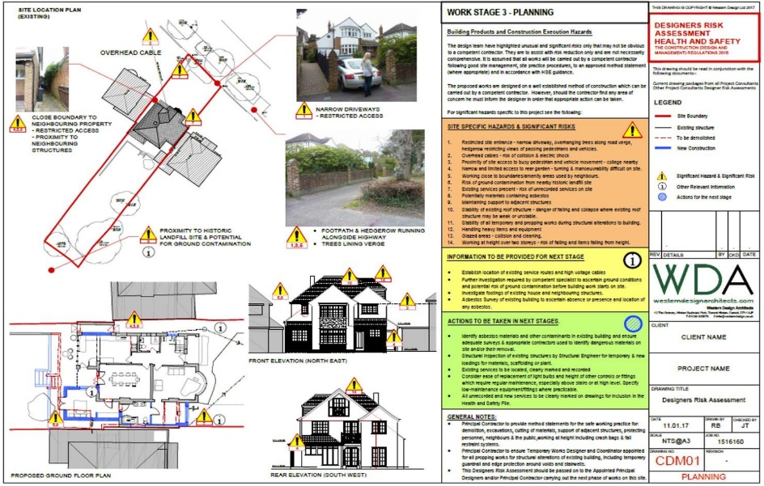
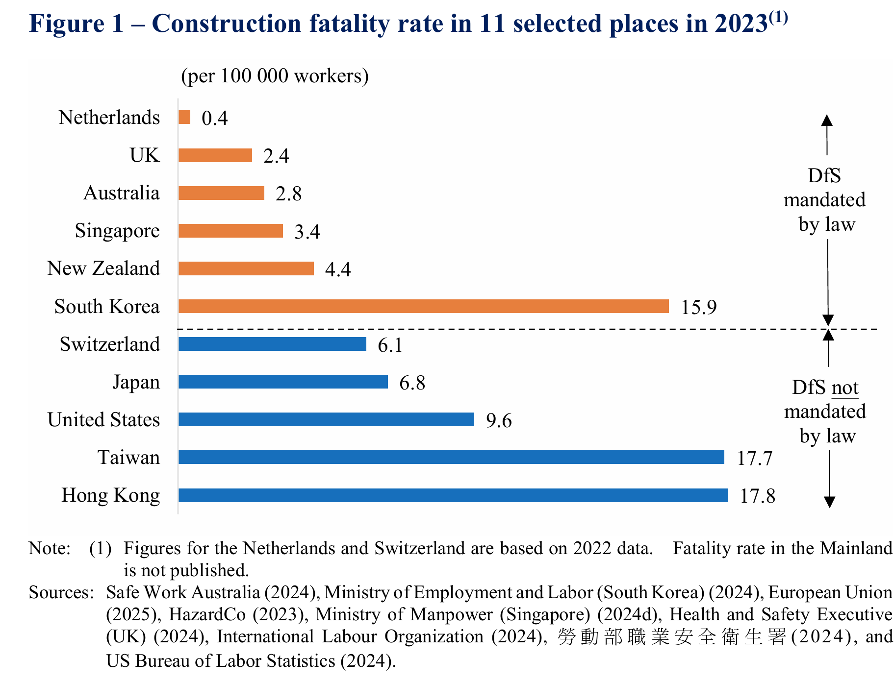
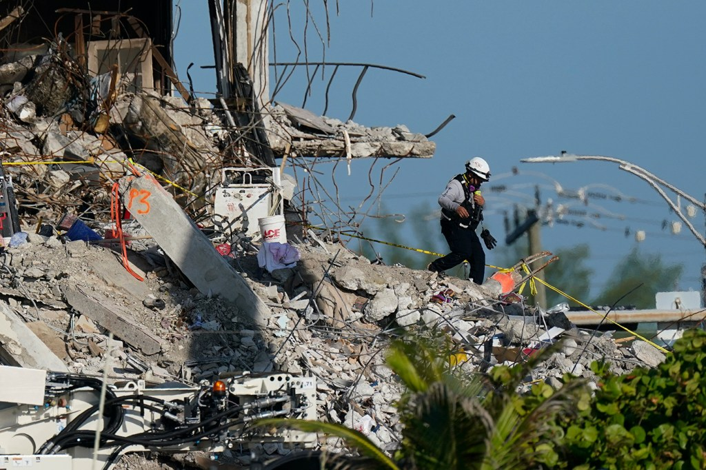
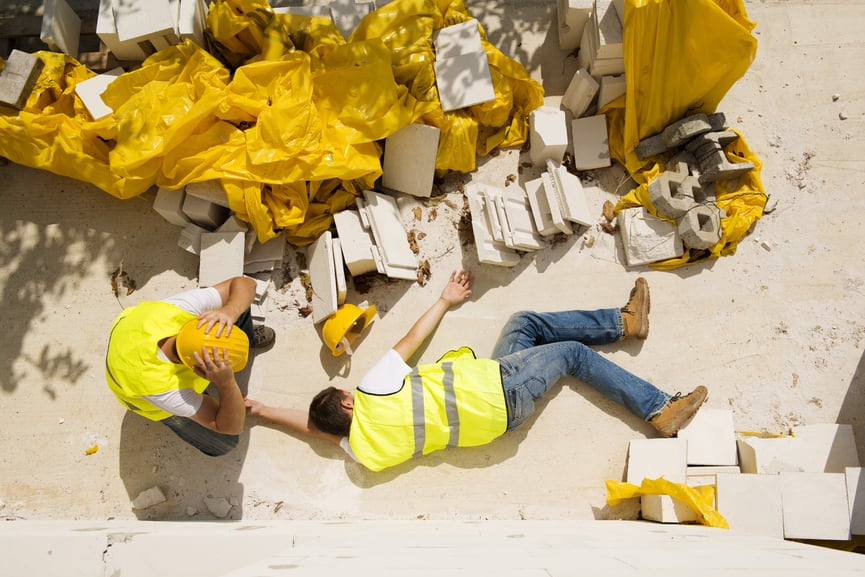
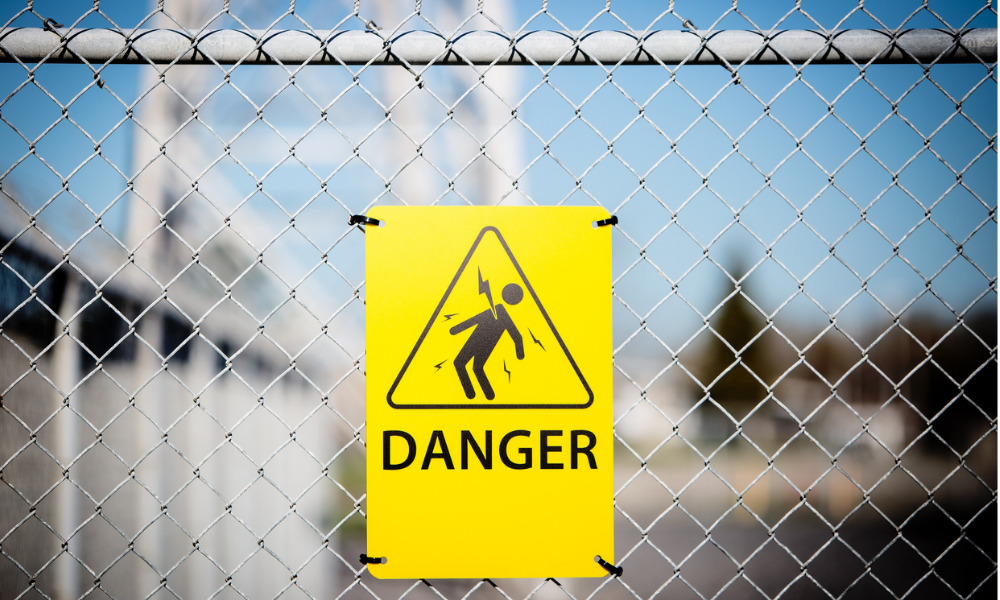
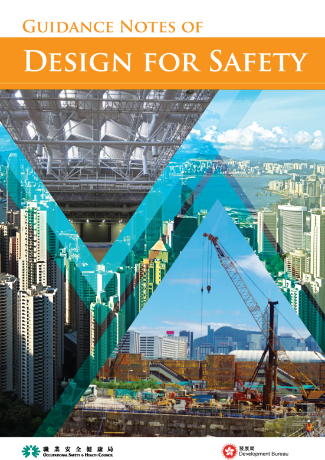

Hazard-Aware Review
Detect design conditions and work sequences associated with high-risk construction activities.
Designing risk out before it reaches the construction site. DfS asks how hazards can be recognised, reasoned about, and reduced while drawings, methods, and sequences are still open to change.

Construction risk is not abstract. Falls, electrocutions, caught-between events, and struck-by-object incidents each point to design decisions that can be reviewed earlier.



Safety guidance, codes, and expert judgement often sit outside the design tools where key decisions are made. Our work translates this knowledge into computable design checks, risk explanations, and safer design alternatives.
The goal is not to replace professional responsibility. It is to make risk visible early enough that designers, engineers, and contractors can still act.

Every research stream is paired with visual evidence, design context, and a path toward safer decision-making.

Detect design conditions and work sequences associated with high-risk construction activities.
Use cross-jurisdictional evidence to frame why prevention-by-design matters.
Augment expert judgement with traceable reasoning and safer alternatives.